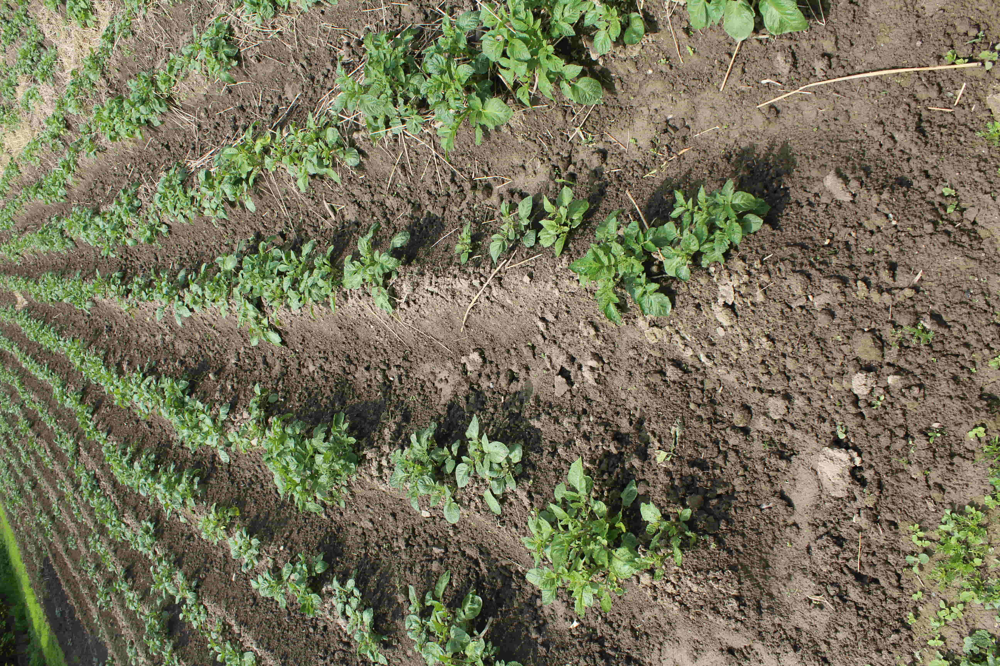
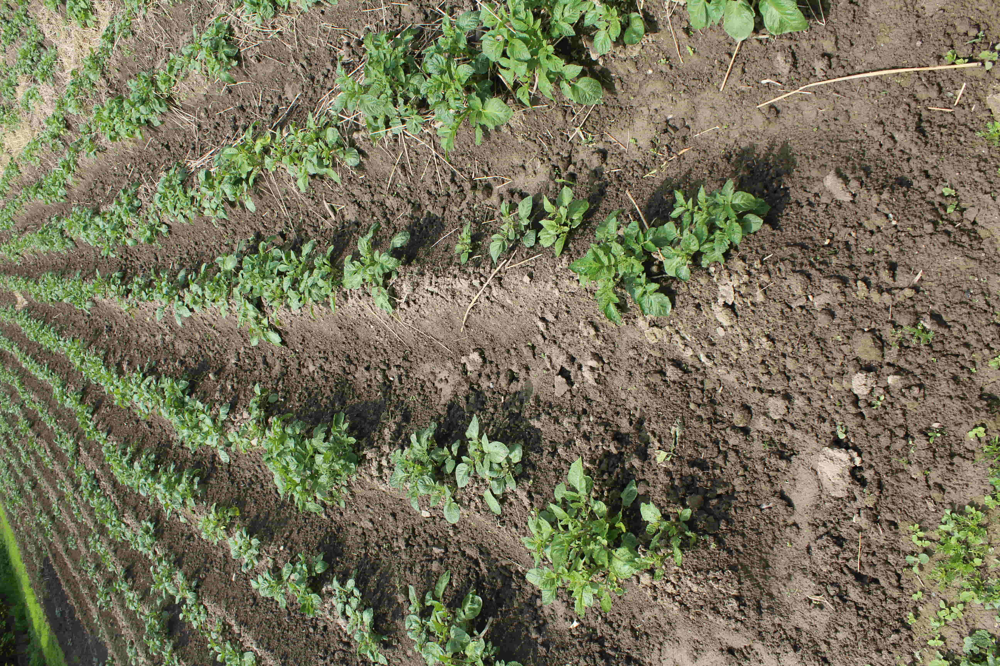

Future Garden
 


digitál, 1000 × 700 mm, 2020
Imaginárne úrodné polia v mojej záhrade vznikajú podľa presnej siete. Je vytvorená s použitím milimetrového
papiera. Futuristické polia, nakreslené presne na milimeter v čistej geometrickej línii boli podkladom pre
koláže. Spojením mojich predstáv a originálnych fotografii, ktoré sledujú rast rastlín a zoradenie sa vytvára
nový obraz, ktorý poukazuje na moje predstavy a reálne polia, ktoré aj napriek naším presným zásahom vytvárajú
svoje obrazy. My určujeme hranice, rozdelíme a zasadíme, ale príroda a rastliny si vytvoria svoj vlastný obraz.
Záhradník je ako umelec v záhrade tvorí, experimentuje, či udáva jej smer.